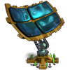

Получено: файл; исходный URL. Иллюстрация объекта в исторической браузерной версии; исходная страница ссылается на zombicity.info, скачан файл по тому же пути на moy.su — побайтовое совпадение не проверено. Для нескольких космических пристаней использована общая пиктограмма источника; это не доказательство идентичности построек. Страница: источник.

Отражатель
историческая браузерная версия ВКонтакте; редакция не установлена- Тип
- Постройка
- Версия и дата
- историческая браузерная версия ВКонтакте; редакция не установлена
Данные по источнику · браузерная социальная версия ВКонтакте; редакция неизвестна · 07.10.2018 — дата публикации, дата дальнейшей редакции неизвестна
Предварительно: Фанатская статья; возможность изменений и зависимость от других справочников не установлены. Пиктограммы рецептов и связи заданий могут требовать сверки.. Требуется сверка.
- Описание
- Отражает луч Звезды зомбокалипсиса, согласно статье.
- Строительство 1
- 15 кирпичей, 20 досок, 10 бруса секвойи; упомянуто задание «Эпицентр»; 100 опыта.
- Строительство 2
- 25 гвоздей, 10 болтов, 10 гаек; упомянуто задание «Непонятки»; 150 опыта.
- Создание
- Статья группирует Палочку из коллекции Хэллоуина 1, Скотч 1 и материал «Палочки» 1 с заданием «Напряжение» и ограничением «всего 1 раз». Направление рецепта по текстовому представлению необходимо проверить; это не обязательно палочка-выручалочка.
Связанные сущности
нет проверенных связей — требуется сверка.